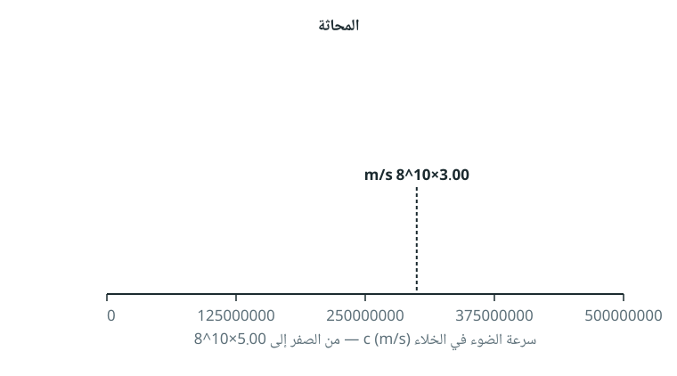

المحاثة
Inductance
المحاثة خاصية للدارة تقاوم تغيّر التيار فيها، ورمزها L ووحدتها الهنري H. تُعرَّف بأنها الفيض المغناطيسي المتولّد لكل أمبير، وتخزّن طاقة في مجالها المغناطيسي.
المحاثة، ورمزها L، هي خاصية لدارة أو لملف تصف مقدار الفيض المغناطيسي المتولّد مقابل كل أمبير من التيار، ووحدتها الهنري، وهو وبر لكل أمبير. وهي تعمل في الدارة كما تعمل الكتلة في الميكانيكا: تقاوم تغيّر الحالة، فالجهد على المحاثة يتناسب مع معدل تغيّر التيار لا مع التيار نفسه. ولذلك لا يتغير التيار في محاثة تغيراً مفاجئاً، كما لا تتغير سرعة كتلة تغيراً مفاجئاً. وتخزّن المحاثة طاقة في مجالها المغناطيسي مقدارها نصف L في مربع التيار. وهي أساس المرشّحات والمحوّلات ومزوّدات القدرة المبدّلة. مثال: ملف محاثته 0.50 H يمرّ فيه تيار 2.0 A يخزّن 0.5 × 0.50 × 4.0 = 1.0 جول، ويكون الجهد عليه 0.50 × (معدل تغيّر التيار)؛ فإذا تغيّر التيار بمعدل 4.0 A/s كان الجهد 2.0 V.
كيف تعمل الظاهرة؟
المحاثة تنشأ من قانون فاراداي نفسه: التيار المتغير في الملف يولّد فيضاً متغيراً، والفيض المتغير يولّد قوة دافعة في الملف نفسه تعارض التغير الذي أنشأها. هذا التعارض الذاتي هو المحاثة الذاتية. وحين يزيد التيار، يبني الملف مجالاً مغناطيسياً ويخزّن فيه طاقة، فيُستهلك جهد إضافي لبناء المجال. وحين ينخفض التيار، ينهار المجال ويعيد الطاقة إلى الدارة. هذا التبادل هو ما يجعل المحاثة تعمل كخزّان طاقة مؤقت في مزوّدات القدرة المبدّلة، حيث تُخزّن الطاقة في نصف الدورة وتعيدها في النصف الآخر، فترفع الجهد بلا محوّل.
العلاقة بالأرقام
L = N·Φ/I بوحدة H = V·s/A. والجهد v = L·di/dt. والطاقة المخزّنة E = ½·L·I². والمفاعلة الحثية X_L = 2πf·L بوحدة أوم. ومحاثة ملف أسطواني هوائي L ≈ μ₀·N²·A/l. مثال عددي: L = 0.50 H، I = 2.0 A: E = 0.5 × 0.50 × 4.0 = 1.0 J. وعند 50 Hz: X_L = 2π × 50 × 0.50 = 157 Ω. وإذا تغيّر التيار بمعدل 4.0 A/s: v = 0.50 × 4.0 = 2.0 V.
مفاهيم متقاربة
المحاثة ليست المقاومة ولا السعة، وكلها عناصر دارة لكن بوحدات وسلوك مختلف: Ω وH وF. والمحاثة ليست الفيض، بل نسبة الفيض إلى التيار. والمحاثة المتبادلة M تخصّ ملفين، والمحاثة الذاتية L تخصّ ملفاً واحداً، ولا يجوز الخلط بينهما في الحساب. والخطأ الشائع أن تُحسب الطاقة بـL·I² بلا النصف؛ النصف ضروري لأنه من تكامل L·i·di. وأخيراً المحاثة ليست ثابتة في القلوب الحديدية، فهي تعتمد على التيار بسبب التشبع.
حدود التطبيق
المحاثة الثابتة L لا تصحّ في القلوب المغناطيسية الحديدية، حيث تتغير النفاذية بالمجال فتصير المحاثة دالة في التيار. وفي الترددات العالية تصير السعة الطفيلية بين اللفات مؤثرة، فيتحول الملف إلى دائرة رنينية لا محاثة صافية. ولا تُستعمل المحاثة وحدها لوصف فقد الطاقة في الملف، فذلك يحتاج مقاومة اللف وفقد القلب. وفي الأنظمة المغناطيسية المفتوحة تتسرب خطوط الفيض، فلا تُحسب المحاثة من الهندسة وحدها بلا معامل تسرب.

| الكمية | القيمة | المصدر |
|---|---|---|
| سرعة الضوء في الخلاء c | 299 792 458 m/s | [1] |
| الشحنة الأولية e | 1.602 176 634×10⁻¹⁹ C | [2] |
| ثابت بلانك h | 6.626 070 15×10⁻³⁴ J·s | [3] |
المصادر
- 1 CODATA Value: speed of light in vacuum — NIST — CODATA 2022 recommended values (2024). physics.nist.gov/cgi-bin/cuu/Value?c · اطُّلع عليه 2026-11-21
- 2 CODATA Value: elementary charge — NIST — CODATA 2022 recommended values (2024). physics.nist.gov/cgi-bin/cuu/Value?e · اطُّلع عليه 2026-11-21
- 3 CODATA Value: Planck constant — NIST — CODATA 2022 recommended values (2024). physics.nist.gov/cgi-bin/cuu/Value?h · اطُّلع عليه 2026-11-21
استشهد بهذا المصطلح
الصيغتان مبنيتان من بيانات الصفحة نفسها: العنوان والتاريخ ورابط النسخة المنشورة.
المحاثة — Inductance. (2026). ديوان المعرفة — انفراد. https://infiradev.com/diwan/terms/term-inductance.html
@misc{term-inductance2026,
title = {المحاثة},
titleaddon = {Inductance},
howpublished = {{ديوان المعرفة — انفراد} — مرجع علمي عربي},
year = {2026},
url = {https://infiradev.com/diwan/terms/term-inductance.html},
urldate = {2026-11-26},
note = {مراجعة علمية: hermes (مراجعة معتمدة 2026-11-26)}
}
راجعه: hermes (مراجعة معتمدة 2026-11-26) · 2026-11-26 · آخر تحديث 2026-11-21